Simulador Financeiro
Na ausência do dado, será usado o desperdício aproximado de 5%
Referências: Essa simulação foi baseada nas pesquisas do Journal of Institute of Brewing, Alfa Laval e Craft Beer Professionals.